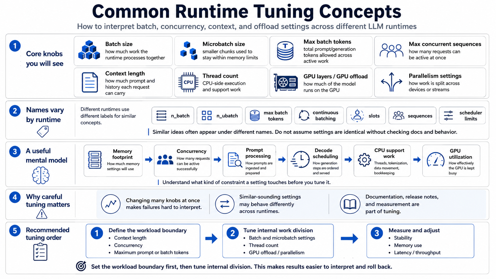

Key Runtime Parameters
Connecting to LMS... Progress: in progress

Narration
Different runtimes use different names, but several concepts appear again and again. Batch size describes how much work the runtime tries to process together. Microbatch size breaks larger work into smaller chunks so the runtime can fit within memory limits. Maximum batch tokens may limit the total number of prompt or generation tokens being processed across active requests.
Maximum concurrent sequences controls how many active conversations or requests can be in flight. Context length controls how much prompt and history each request can carry. Thread count affects CPU execution and support work around the model. GPU layers or GPU offload settings decide how much of the model runs on the GPU instead of the CPU. Parallelism settings may affect how work is split across devices or streams.
The confusing part is that names vary. One runtime may expose n_batch and n_ubatch. Another may talk about max batch tokens, continuous batching, slots, sequences, or scheduler limits. Do not assume two settings are identical just because they sound similar. Documentation, release notes, and measurement are part of the tuning process.
A useful mental model is to ask what each setting controls: memory footprint, concurrency, prompt processing, decode scheduling, CPU support work, or GPU utilization. Once you know what kind of constraint a setting touches, you can make smaller changes and interpret the result more confidently. The setting name matters less than understanding the behavior it changes.
When a runtime exposes many knobs, resist the urge to turn all of them at once. Start with the settings that define the workload boundary: context length, concurrency, and maximum prompt or batch tokens. Then tune the settings that affect how the work is divided internally. That order makes failures easier to interpret and rollback easier to manage.